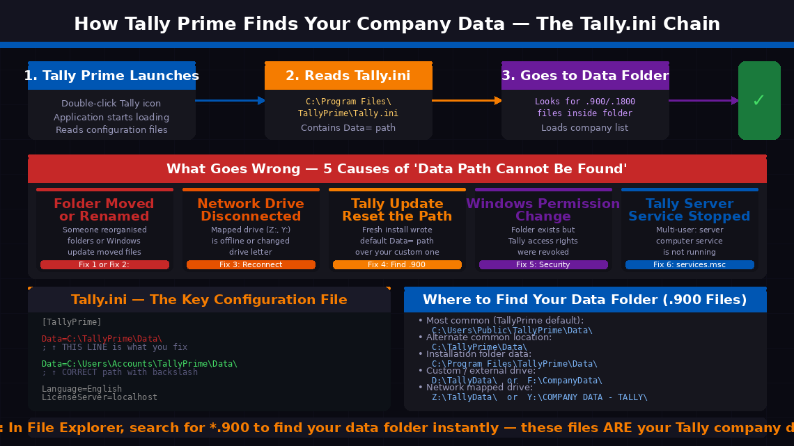
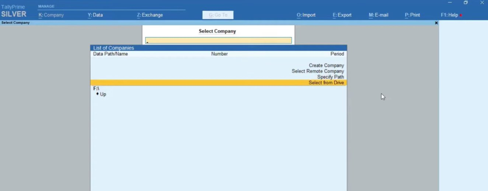
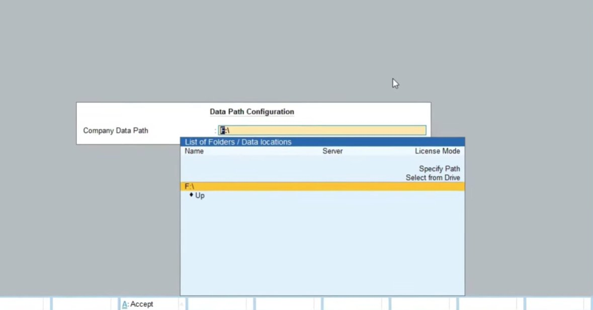
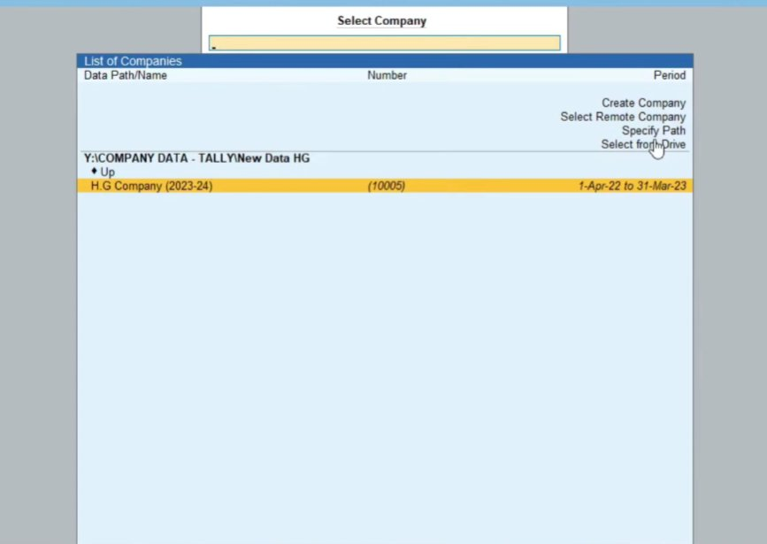
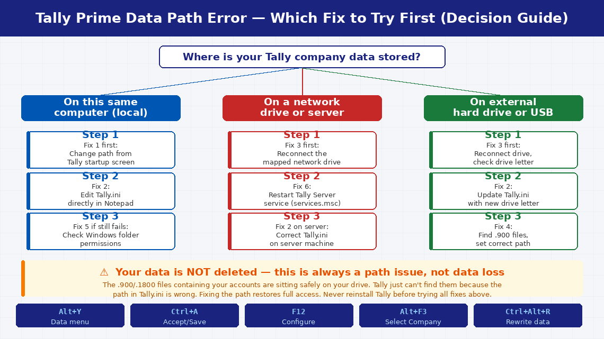

Tally Prime 'Data Path Cannot Be Found': Quick Diagnosis and Fix
The 'data path cannot be found' error in Tally Prime means the software can't locate the folder where your company data is stored — the path in Tally's configuration has become invalid. This happens after moving the data folder, renaming the folder, or reinstalling Tally without reconfiguring the data path. The data itself is almost certainly intact — only the path reference needs updating.
Simply put, Tally Prime is looking for your company data folder in a location that no longer exists, has been renamed, or is currently inaccessible. Tally Prime does not store company data inside the application — it maintains a configuration file called Tally.ini (in the installation folder) that contains the exact file path to your data directory. Every time Tally starts, it reads this path and goes directly there to load your company list. When that path is wrong or broken, the error appears.
Why Does This Error Appear?

Data= line to load your company list. If that path is wrong — due to any of the five causes shown — the error fires before your company list can even appear. The fix is always the same: correct the path. The bottom panel shows exactly what the broken line looks like vs the corrected line in Tally.ini — a single backslash at the end and the right drive letter are the two most commonly missed details.The five most common causes:
- The data folder was moved, renamed, or deleted. Someone reorganised the folder structure, a Windows update shifted files, or a cleanup operation deleted what appeared to be an unused folder.
- The data is on a network drive or external hard drive that is disconnected or has been reassigned a different drive letter. If your data lives on
Z:\TallyData\and the network share is now offline, Tally cannot reach it. - Tally Prime was reinstalled or updated and the fresh installation wrote a default data path to Tally.ini, overwriting the custom path that pointed to your actual company data.
- Windows file permissions changed — a Windows update or group policy change may have revoked Tally’s access rights to the folder.
- Multi-user setup: the Tally server service has stopped on the computer hosting the data.
6 Step-by-Step Fixes
Follow the order — the quickest wins are at the top.
Before editing any file, try the quickest approach — pointing Tally to the correct folder directly through the application’s own interface.
- Close Tally Prime completely and relaunch it.
- On the startup screen (before your company list appears), press Alt+Y to open the Data menu, then select Data Path → Company Data Path.
- In the Data Path Configuration screen, type or paste the correct path to your data folder.
- Alternatively, use “Specify Path” or “Select from Drive” from the on-screen options to browse to the folder rather than typing it manually.
- Press A: Accept (or Ctrl+A) to confirm the new path.
- Tally will attempt to read the company list from the new path. If your companies appear, the path was the only problem.
Not sure where your data folder is? Open Windows File Explorer and search for *.900 or *.1800 — Tally data files use these extensions. Common locations include C:\Users\Public\TallyPrime\Data\, C:\TallyPrime\Data\, or a mapped network drive.

F:\) is where Tally is currently looking for your data. If no company files exist at that location, the list is empty. The right-side menu options — Specify Path and Select from Drive — are the correct tools for Fix 1. Use “Specify Path” to type the correct folder path, or “Select from Drive” to browse your drives visually without typing. Once you point Tally to the folder containing your .900 files, your company list will appear instantly.If the startup screen path change didn’t persist — or if Tally won’t reach the startup screen — edit Tally.ini directly. This is the definitive fix that permanently corrects the path Tally reads every time it launches.
- Navigate to your Tally Prime installation folder:
• 64-bit Windows:C:\Program Files\TallyPrime\
• 32-bit Windows:C:\Program Files (x86)\TallyPrime\ - Right-click Tally.ini → Copy → paste to Desktop as backup.
- Right-click Tally.ini → Open with → Notepad.
- Find the line beginning with
Data=— it looks like:Data=C:\TallyPrime\Data\ - Replace the path after
Data=with the correct path to your data folder. Ensure the path ends with a backslash (\) and the drive letter is correct:Data=C:\Users\Accounts\TallyPrime\Data\ - Press Ctrl + S to save.
- Close Notepad and relaunch Tally Prime — your company list should now appear.

Company Data Path field at the top shows what Tally is currently configured to use. The List of Folders / Data locations dropdown below it shows available paths including Specify Path (type a full path manually) and Select from Drive (browse drives visually). Press A: Accept at the bottom after entering the correct path. This in-application fix is always the fastest first approach — it changes the path immediately without requiring a text editor or file navigation.If your Tally data is stored on a network server or an external drive, a disconnected drive is the most likely cause — and the fix is reconnecting the drive before Tally launches, not changing Tally’s configuration.
- Open Windows File Explorer and check the left panel under “This PC.” Look for the drive letter your Tally data is mapped to.
- If the drive shows a red X or is listed as “Disconnected,” the network share or external drive is not accessible.
- For network drives: Right-click the disconnected drive → select Reconnect. If this fails, verify the server computer is powered on and accessible.
- For external drives: Reconnect physically and wait for Windows to recognise it. Check the drive letter — if Windows assigned a different letter (e.g., E: instead of F:), update
Data=in Tally.ini (Fix 2) to match the new letter. - To prevent disconnection recurring: right-click the network drive → Properties → check “Reconnect at sign-in.”
- Once the drive is accessible, relaunch Tally Prime.
Tally Prime updates and fresh installations sometimes reset Tally.ini to default settings, overwriting your custom data path. If this error appeared immediately after a Tally update, this is almost certainly the cause.
- Locate your actual data folder using File Explorer — search for
*.900files as described in Fix 1. - Note the complete path including the drive letter.
- Edit Tally.ini as described in Fix 2 to point the
Data=line to this correct path. - Additionally, check whether Tally created a new empty “Data” folder inside the installation directory during the update. If a folder named “Data” exists at
C:\Program Files\TallyPrime\Data\, it is empty — not your real data. Confirm your actual data path by verifying the .900 files are present there. - After correcting the path, relaunch Tally and confirm your companies appear.

Y:\COMPANY DATA - TALLY\New Data HG — is a network mapped drive path, and the company H.G Company (2023-24) has appeared in the list with its company number (10005) and financial period. This is exactly what your screen should look like after applying Fix 1 or Fix 2. The moment your company list reappears, your data is fully accessible — select the company and confirm everything opens correctly.If the data folder exists at the exact path shown in Tally.ini but the error still appears, a Windows permission change may be preventing Tally from reading the folder.
- In File Explorer, right-click your Tally data folder → Properties.
- Click the Security tab.
- Review the list of users and groups under “Group or user names.”
- Find the Windows user account that Tally Prime runs under — typically your current login account, or “SYSTEM.”
- Click Edit and ensure the account has Full Control or at minimum Read & Execute, List folder contents, Read permissions under “Allow.”
- Click Apply → OK and relaunch Tally Prime.

In multi-user Tally Prime setups, the “Data Path Cannot Be Found” error on client machines is in most scenarios caused by the Tally server service having stopped on the host computer — not a configuration error on the client.
- On the server computer (where the Tally data is physically stored), press Windows key + R, type
services.msc, and press Enter. - In the Services list, look for “TallyPrime Server” or “Tally.ERP 9 Server.”
- If the status shows “Stopped,” right-click it and select Start.
- If the service fails to start, right-click → Properties → note the error in the General tab. The server’s Tally.ini may also need correcting using Fix 2 on the server machine.
- Once the service is running, return to client computers and relaunch Tally Prime — the company list should now be accessible.
- To prevent recurrence: set the service Startup Type to “Automatic” in its Properties so it restarts automatically if the server reboots.
When to Contact Tally Support
The “Data Path Cannot Be Found” error is nearly always a configuration issue that the fixes above resolve. But there are situations where professional help is the right call:
- The data folder genuinely cannot be found anywhere on the computer or network. If the folder containing your .900 files is missing from every location you’ve searched, the data may have been accidentally deleted. Stop making changes immediately and contact a data recovery specialist — do not write new data to the affected drive.
- Tally opens but shows an empty company list even when pointed to the correct folder. The .900 files may be corrupted. Tally Prime’s built-in repair utility (Ctrl+Alt+R) can sometimes recover corrupted data — but take a backup first.
- The error appeared after a ransomware or malware attack. If any Tally .900 files show unusual file names or cannot be opened, do not attempt repair with Tally’s built-in tools. Contact a cybersecurity specialist immediately.
- You manage a multi-user server setup with custom ports, static IPs, or domain-level permissions. This requires a Tally-certified implementation partner.
To reach Tally Solutions support:
- India: tallysolutions.com/contact-us
- Helpline: 1800-103-6991 (toll-free, Mon–Sat, 9 AM–6 PM)
- Email: support@tallysolutions.com
- Your local Tally Partner (the reseller or CA firm who originally implemented Tally) is often the fastest route — they know your specific setup and can diagnose remotely.
When contacting support, have your Tally Prime serial number (Help → About in Tally) and the exact error message text ready, plus a note of whether the error appeared after a Windows update, Tally update, hardware change, or network change.
Quick Summary
| Fix | Difficulty | Time Needed |
|---|---|---|
| Change data path from Tally startup screen (Alt+Y → Data Path) | Very Easy | 3 minutes |
| Edit Tally.ini to correct the Data= line | Easy | 10 minutes |
| Reconnect network or external drive before launching Tally | Easy | 5 minutes |
| Restore correct path after Tally update or reinstall | Easy | 10 minutes |
| Check and correct Windows folder permissions | Moderate | 10 minutes |
| Restart Tally Server service on host computer (multi-user) | Easy | 5 minutes |
Start with Fix 1 — the startup screen path change is the fastest route and requires no file editing. If that doesn’t persist after restarting Tally, Fix 2 (editing Tally.ini) makes the change permanent. For businesses using Tally data on a network server or external drive, Fix 3 and Fix 6 resolve the majority of cases.